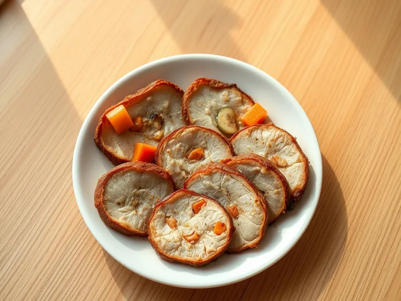

Буженина домашняя из свинины в духовке
Запечённый в фольге кусок свинины с чесноком и морковью для нарезки
165 мин8 порц.520 ккал на порциюБ 31 · Ж 43 · У 2Русская кухня
Открыть в приложении: порции, таймеры, список покупок
Продукты на 8 порц.
- Свинина1500 г
- Чеснок5 зуб.
- Морковь1 шт
- Горчица1 ст. л.
- Растительное масло1 ст. л.
- Соль3 ч. л.
- Перец чёрный молотый1 ч. л.
- Паприка1 ч. л.
- Лавровый лист3 шт
Как готовить
- Обсушите кусок свинины (окорок или шейку) бумажным полотенцем. Сделайте ножом надрезы глубиной 2 см и вставьте в них дольки чеснока и брусочки моркови.
- Смешайте соль, перец, паприку, раскрошенный лавровый лист, горчицу и масло. Натрите мясо со всех сторон и оставьте на 40 минут при комнатной температуре (или на ночь в холодильнике).
- Плотно заверните мясо в 2 слоя фольги и положите в форму.
- Запекайте при 200 °C (сильный жар) 20 минут, затем убавьте до 180 °C (средний жар) и запекайте ещё 60 минут.
- Раскройте фольгу и запекайте 15 минут до румяной корочки. При проколе ножом в самом толстом месте сок должен быть прозрачным.
- Оставьте мясо в фольге на 15 минут, чтобы сок распределился, затем нарежьте тонкими ломтиками.
Совет. Остывшую буженину режьте только на следующий день из холодильника: ломтики получатся ровными и тонкими. Храните завёрнутой в плёнку до 4 дней.